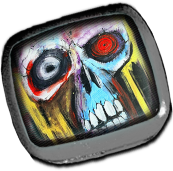

Artist Byron
I draw zombies. Ink and paint, 20 years in.
Hello and welcome. I am Byron, a Canadian artist drawing and painting undead horrors in ink and paint. Zombies, skulls, and creepy portraits. Come for the art, stay for the Horde.
Real World, Gallery Crypto, Play the Game
Shop · Shop on Ko-fi · X, @ArtistByron · Facebook · About Byron
You made it to the bottom. The frame never moved.

 Artist for hire, on Ko-fi
The Art
Crypto
About Byron
Artist for hire, on Ko-fi
The Art
Crypto
About Byron


